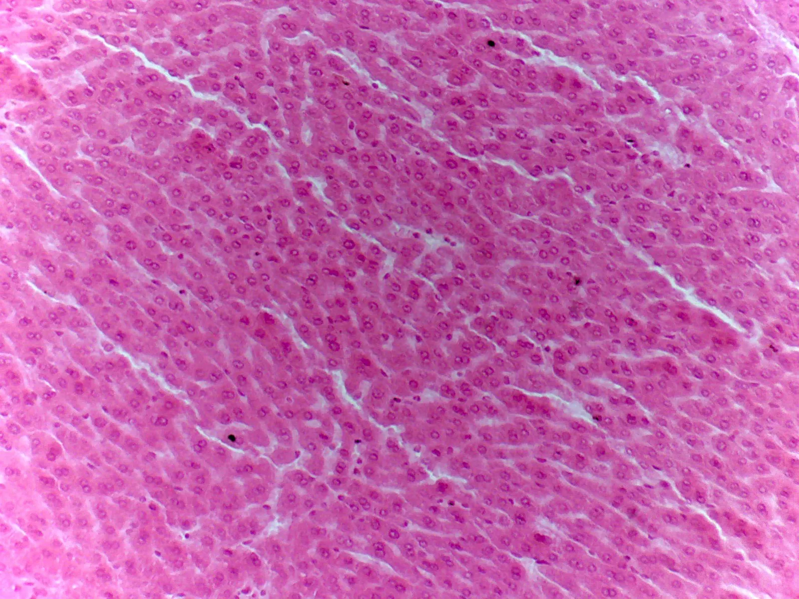
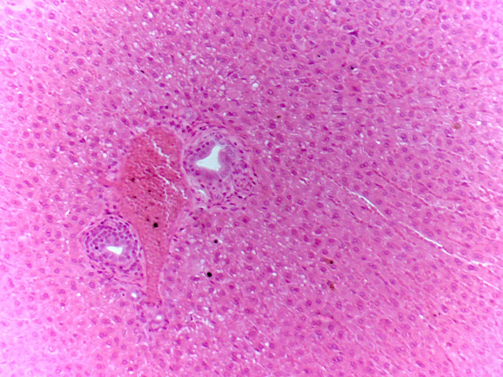
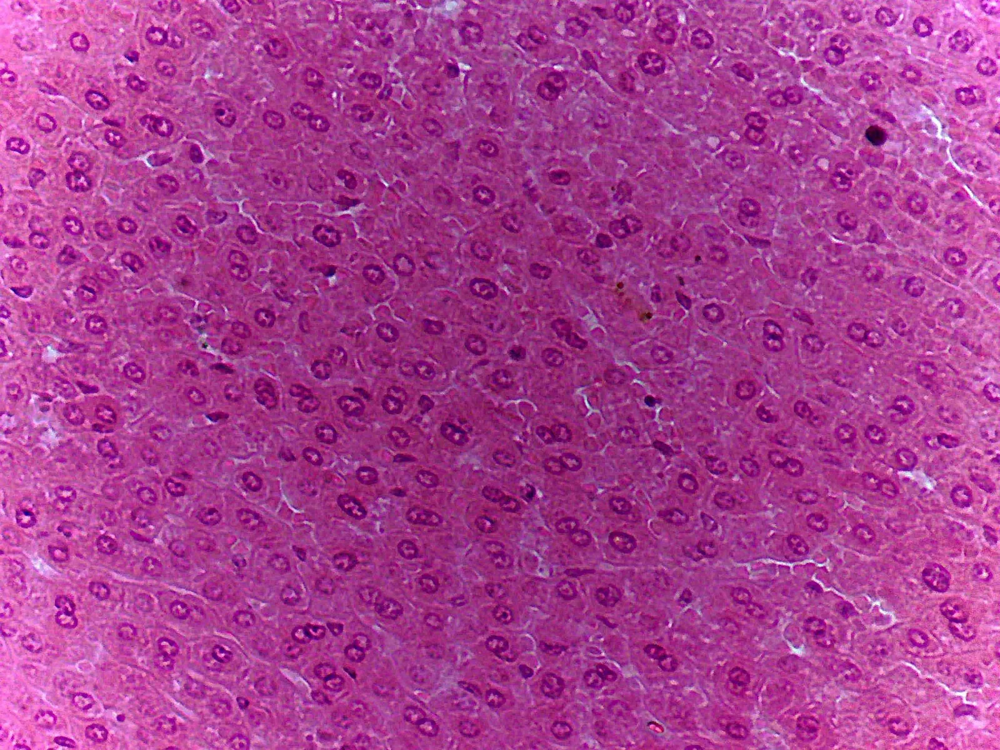
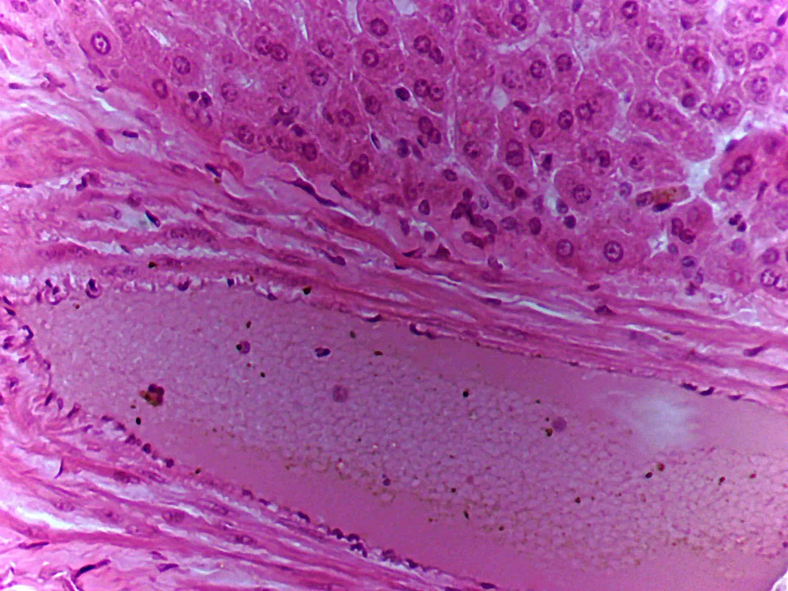
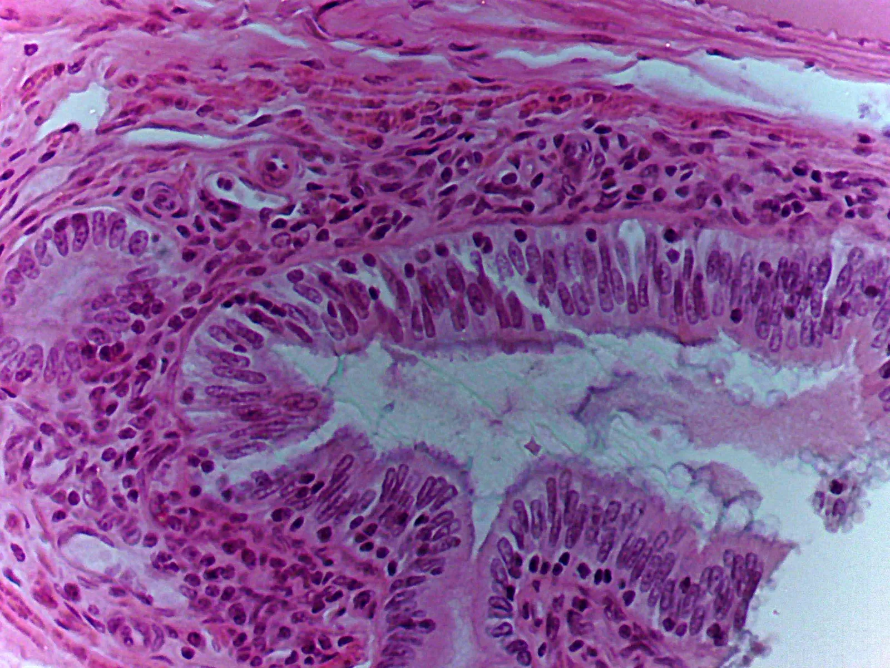

Lâmina 52 · Sistema digestório
Fígado





Toque na imagem para ampliar. No computador, use as setas do teclado para trocar de imagem.
Lâmina 52 · Sistema digestório





Toque na imagem para ampliar. No computador, use as setas do teclado para trocar de imagem.